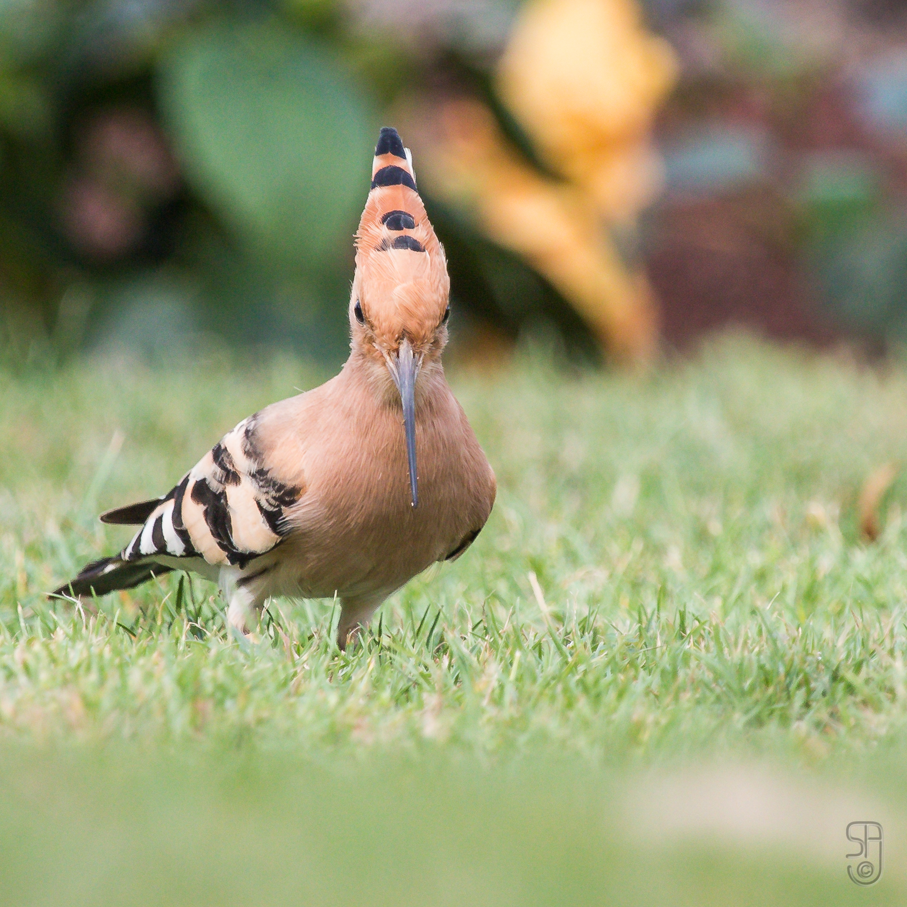

Upupa epops — Identification, habitats, breeding and occurrence in the Arab region
Identity and recognition
The Common Hoopoe, Upupa epops, belongs to Upupidae and has a distinctive appearance among birds of Arab gardens. Warm sandy-rufous plumage contrasts with black-and-white wings and tail, and a long bill curves downwards. A black-tipped crest can be raised and spread or folded back. Rounded wings and successive beats make the flying bird look broader than its perched body suggests.
Distinguishing similar birds
The sexes look much alike. Females may be slightly smaller and paler, but these differences do not safely establish sex in every photograph. Juveniles are comparatively dull, with shorter bills and crests. A folded crest does not indicate a different species, and apparent crest length alone is insufficient for ageing. Combine the curved bill, patterned wings and crest, remembering that light and feather position can alter the impression of colour.
Habitat, food and behaviour
Hoopoes require ground where they can probe or collect prey, with nesting cavities nearby. Orchards, pastures, fields, gardens and open landscapes with scattered trees can provide this combination. Large insects, their larvae and other invertebrates form the principal food. The bill probes and picks; short vegetation or exposed patches make prey accessible. The repeated hollow song advertises a territory, and a bird may be heard before it is seen.
Breeding and annual cycle
An old tree, wall, rock cavity or suitable nestbox can accommodate the nest. The female lays and incubates inside the cavity while the male supplies food. European accounts commonly report five to eight eggs and approximately 16 days of incubation, variable figures rather than a rule for every population. Nestlings require sustained provisioning before leaving. Field research shows that food supply and a chick’s position within the brood are associated with survival prospects: abundant prey matters as much as the presence of a hole.
Arab-region distribution and seasonality
Arab occurrence combines breeding populations with passage migrants and winter visitors. Egypt’s population includes the subspecies Upupa epops major. Jordan records residents and migrants; the regional account describes widespread summer breeding in Iraq. The UAE supports breeding populations that expanded with suitable habitat. Oman receives substantial passage and winter numbers, with breeding more restricted, while Qatar’s reference describes passage. In October, therefore, a local bird and a migrant may occur in the same region. Finding a hoopoe in a garden does not establish year-round residence there.
Ecology and conservation
Hoopoes belong to food webs centred on soil and insects. Their global category is Least Concern, although declining insect resources, loss of cavity-bearing trees and changing land use can pressure local populations. Protecting holes and varied orchards, while reducing pesticide use, helps retain food and breeding resources. This conspicuous bird attracts photographers, but repeated approaches to a nest entrance can interrupt feeding. Watch from a distance that allows adults to enter and leave freely rather than trying to draw them out at the cavity.
References
AviList Core Team — AviList: The Global Avian Checklist, v2026
Qatar e-Nature — الهدهد
Cornell Lab of Ornithology — Birds of the World: Common Hoopoe
Swiss Ornithological Institute — Common Hoopoe conservation programme
LPO — Huppe fasciée
OSME — Region List 8.1, Non-Passerines, 2022
Jordan BirdWatch — Jordan Bird List
UAE National Red List — Upupa epops
Food supply and provisioning behavior of parents: Are small hoopoe nestlings condemned to die?, 2023
Oiseaux.net — Huppe fasciée, identification account
Photo: Stein Arne Jensen — CC0 1.0.